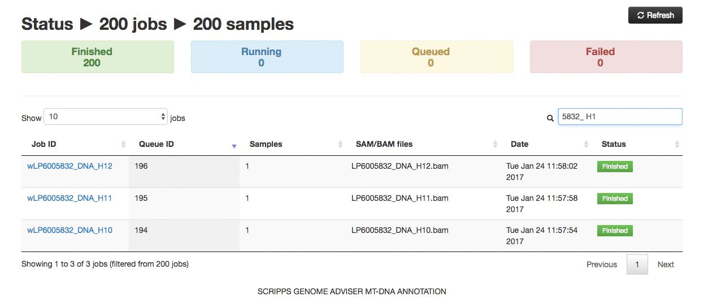
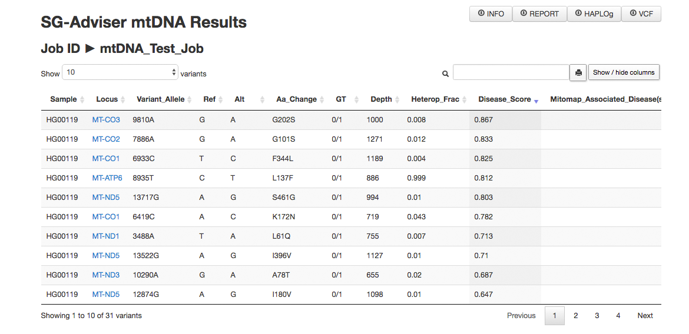

SG-ADVISER mtDNA
SG-ADVISER mtDNA is a web-platform for the analysis, annotation and reporting of human mitochondrial DNA variants coming from NGS data. It is built on top of MToolbox v.1.0 platform, a bioinformatics pipeline that reconstructs and analyzes human mitochondrial DNA from high throughput sequencing data.
Rueda M and Torkamani A, SG-ADVISER mtDNA: A web server for mitochondrial DNA annotation with data from 200 samples of a healty aging cohort. BMC Bioinformatics 2017 18:373
The server uses SAM / BAM files as input. The SAM / BAM files must consist of mitochondrial DNA reads. In order to extract them from a WES of WGS alignment file you can execute this command (Linux):
samtools view -b all.bam chrM > mtdna.bam
or
samtools view -b all.bam MT > mtdna.bam
You can obtain SAMtools from here. Note that we will be aligning the reads again, thus, the reference genome used to create the SAM / BAM file is irrelevant.
Nomenclature: The naming of the SAM / BAM files must have this format "sampleID.[bs]am" (alphanumeric plus underscores are accepted).
The user has two options for uploading mtDNA SAM / BAM files. The first one is to upload individual samples. The second is to analyze a cohort by uploading all the SAM / BAM files in a folder. The latter will create aggregated results that can be helpful in family analysis. To reduce the width of some columns, in cohort mode we will be displaying the 3 last characters from the sampleID (e.g., "MA0123401P.bam" will be reduced to "01P"). Please rename your files accordingly if your plan is submitting cohorts.
By default, SG-ADVISER mtDNA will assign an unique numeric indentifier to each job. Note that a job can contain multiple samples (i.e., from cohort mode).
Note that the data transfer is encrypted (SSL). The resuls will be deleted after a week. We will store metadata from each job (parameters used).
Optional parameters
Once the files have been uploaded to the server, SG-ADVISER mtDNA assigns them to a queue system that launches the jobs sequentially. In the Status page the jobs are displayed as a searchable HTML table, whose columns can be re-ordered according to the user's preference. The table consists of the following fields:
Note that the search box accepts regex e.g. "1483 (run|fai)".

If you click in a Finished sample, you will be redirected to the Results page. The results are reported both as a HTML table and as downloadable files.
Downloadable files:
HTML table:
In this tab SG-ADVISER mtDNA displays a browsable table consisting of the most relavant fields relative to the variant annotation:

The results for the 200 individuals from our healthy aging cohort can be acceessed on the Menu (see above). The format is identical to that used for any other sample.
All the GenBank comparison in the accompanion paper was performed using data downloaded from Mitobank. The list of GenBank IDs used can be found here and the raw data can be downloaded from Mitomap-link-1 and Mitomap-link-2.
The Job ID for the Wellderly samples can be found at the Supporting Info or here.
SG-ADVISER mtDNA is built on top of MToolbox v.1.0 and consists of the following steps:
First thing we do is to convert SAM / BAM files into fastq files via Sam2Fastq.jar (PicardTools suite).
Then we use mapExome.py to map the reads onto RSRS (Reconstructed Sapiens Reference Sequence, PMID: 22482806) reference genome. The reads are aligned via GSNAP (GSNAP 2015-12-31.v7).
Variant calling and annotation is performed through MToolBox. MToolbox is a bioinformatics pipeline to reconstruct and analyze human mitochondrial DNA from high throughput sequencing data. MToolBox performs haplogroup assignment and and prioritization analysis of mitochondrial variants. MToolBox also provides pathogenicity scores, profiles of genome variability and disease-associations for mitochondrial variants. These are the scripts used:
SG-ADVISER mtDNA transforms the output into a format (JSON) that is rendered in the form of HTML tables.
Apart from a standalone calculation, we envision that some users may wish to use the command-line to run the calculation in many samples.
We are providing a Perl script implemented using the LWP library (installed by default in most Linux distributions and Mac OS) for job submission as well as a bash script for downloading of the result upon completion. The command-line results will be also stored and accessible through a web browser at https://genomics.scripps.edu/mtdna/results/jobid, where JobId is the identification number of the job.
If you have any specific question, or found a bug, please contact the author at mrueda@scripps.edu.